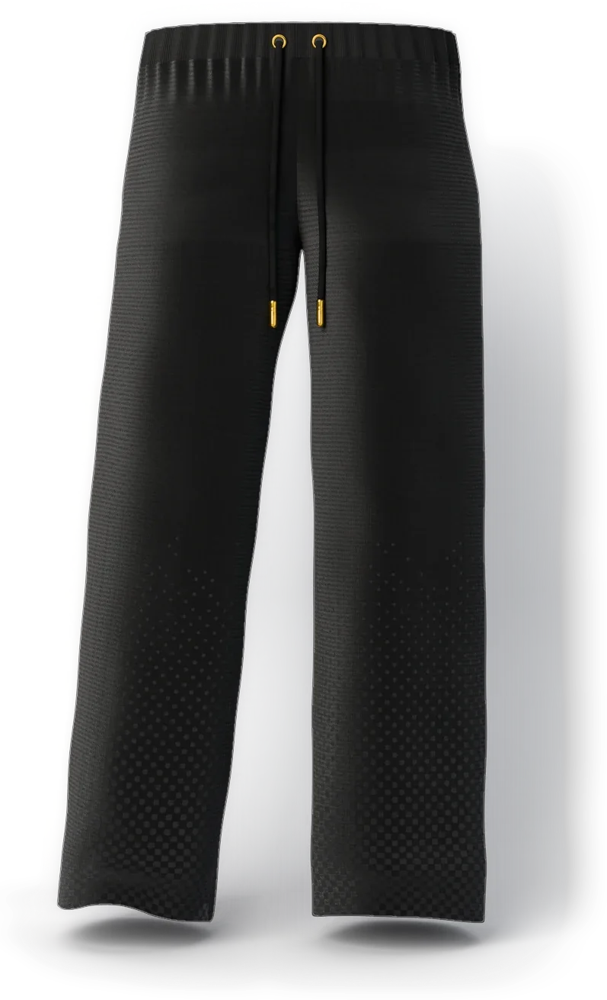
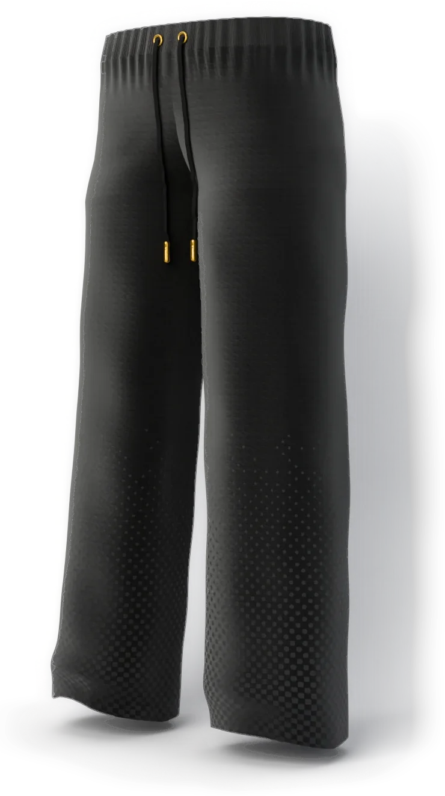
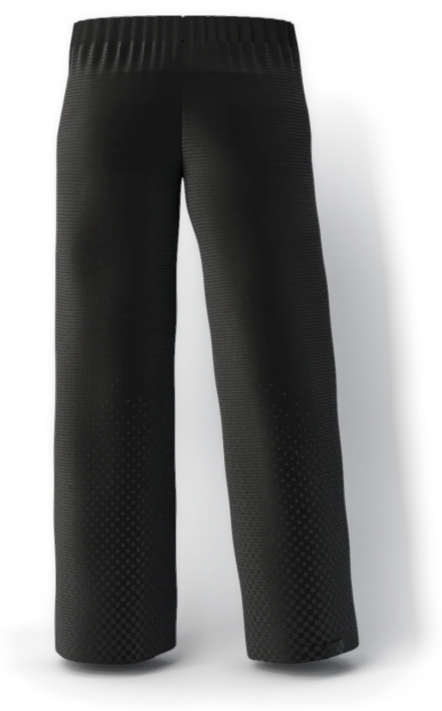
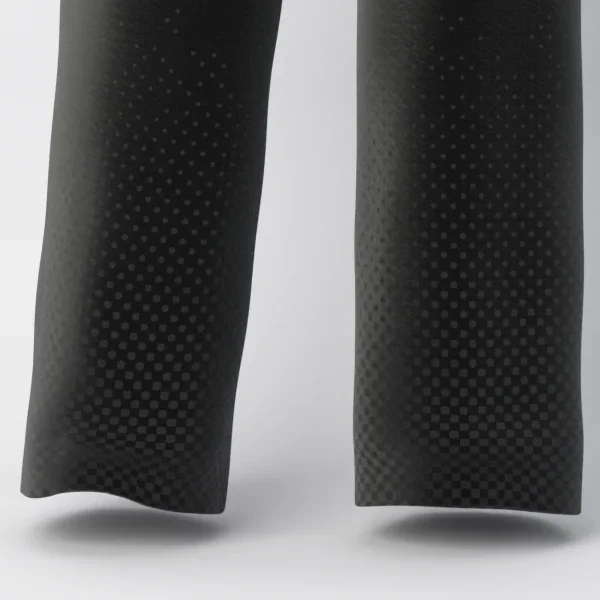
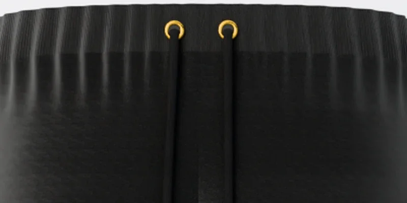

STAND-IN · img/carbonado-trousers/front/master.* (departments/apparel/new-pieces-2026-11/build/quiet-black-trousers/site/quiet_black_trousers_front_16k.png; 16K, 8640 × 15360)
STAND-IN · img/carbonado-trousers/three-quarter/master.* (three-quarter view, 8K; 8K, 4320 × 7680)
STAND-IN · img/carbonado-trousers/back/master.* (back view, 8K; 8K, 4320 × 7680)Where it is going
The lobby, far end
The rope, unhooked from its post.
Chapter I · Knitwear
Carbonado
Knit trousers
Scroll to walk around it
Chapter I
Carbonado
Knit trousers
The quiet that follows the hoodie down. A relaxed straight leg in the house knit, its dots rising from the hem and fading at the knee, the waist tied with a black cord tipped in gold.
- KNIT
- 28-GAUGE DOUBLE JACQUARD
- YARN
- MATTE AND MERCERISED BLACK COTTON
- LEG
- RELAXED, STRAIGHT
- COLOURWAY
- BLACK / BLACK
- SIZE
- S · M · L · XL · XXL
PRICE ON REQUEST
Keep a seatThe register sees the pre-sale first.
Details
- Pre-sale
- Made to order. We email your delivery date once production is confirmed. Cancel for a full refund any time before production starts.
- Returns
- Size exchanges within 14 days of delivery, unworn and with tags.
- Care
- Wash cold, inside out, on a gentle cycle. Dry flat. No tumble dryer, no bleach. Care
- Size
- The measurements
Where it is going · C2
The lobby, far end
The rope, unhooked from its post.
On the screen in the film, the picture is tomorrow: each piece in the place it is going, with one place kept for someone.
The filmClose

STAND-IN · img/carbonado-trousers/detail-fade/master.* (the fade at the knee, 8K close-up; 8K, 7680 × 4320)The fade at the knee

STAND-IN · img/carbonado-trousers/detail-waistband/master.* (the waistband, 8K close-up; 8K, 7680 × 4320)The waistband
The maker’s notes
Carbonado, the Quiet Black trousers
- They begin as four panels, each 376 stitches by 1,611, in the hoodie’s knit.
- Two black cottons are used: a matte one for the ground, a mercerised one for the dots.
- The dots sit on a 12 mm screen at 45 degrees, meeting at the hem and gone by the knee.
- The leg is straight and relaxed, 63 cm round at the hem.
- They close on a 4 cm rib waistband: a black cord, two gold eyelets, gold tips.
Inside them: the hem, turned up 2.5 cm. No cuff.
Read the bookThe packaging
The house lights go down. Black board, cream tissue the colour of the screen, and one gold disc between you and the first scene.
 STAND-IN · img/shared/pack-closed/master.* (packaging/chapter1/renders: closed (the approved final, 3840 px); 8K, 7680 × 4320)
STAND-IN · img/shared/pack-closed/master.* (packaging/chapter1/renders: closed (the approved final, 3840 px); 8K, 7680 × 4320)The closed box, its band and the gold disc
 STAND-IN · img/shared/pack-open/master.* (packaging/chapter1/renders: open (the approved final, 3840 px); 8K, 7680 × 4320)
STAND-IN · img/shared/pack-open/master.* (packaging/chapter1/renders: open (the approved final, 3840 px); 8K, 7680 × 4320)The open box, the piece folded in cream tissue
 STAND-IN · img/shared/pack-disc/master.* (packaging/chapter1/renders: disc (the approved final, 3840 px); 8K, 7680 × 4320)
STAND-IN · img/shared/pack-disc/master.* (packaging/chapter1/renders: disc (the approved final, 3840 px); 8K, 7680 × 4320)The gold disc on the band
 STAND-IN · img/shared/pack-shopping/master.* (packaging/chapter1/renders: shopping (the approved final, 3840 px); 8K, 7680 × 4320)
STAND-IN · img/shared/pack-shopping/master.* (packaging/chapter1/renders: shopping (the approved final, 3840 px); 8K, 7680 × 4320)The shopping bag with cream tissue
 STAND-IN · img/shared/pack-trims/master.* (packaging/chapter1/renders: trims (the approved final, 3840 px); 8K, 7680 × 4320)
STAND-IN · img/shared/pack-trims/master.* (packaging/chapter1/renders: trims (the approved final, 3840 px); 8K, 7680 × 4320)The hang tag, the card and the sealed envelope